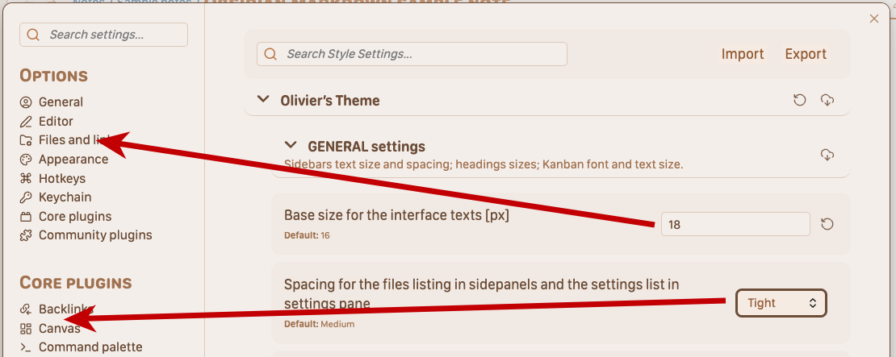
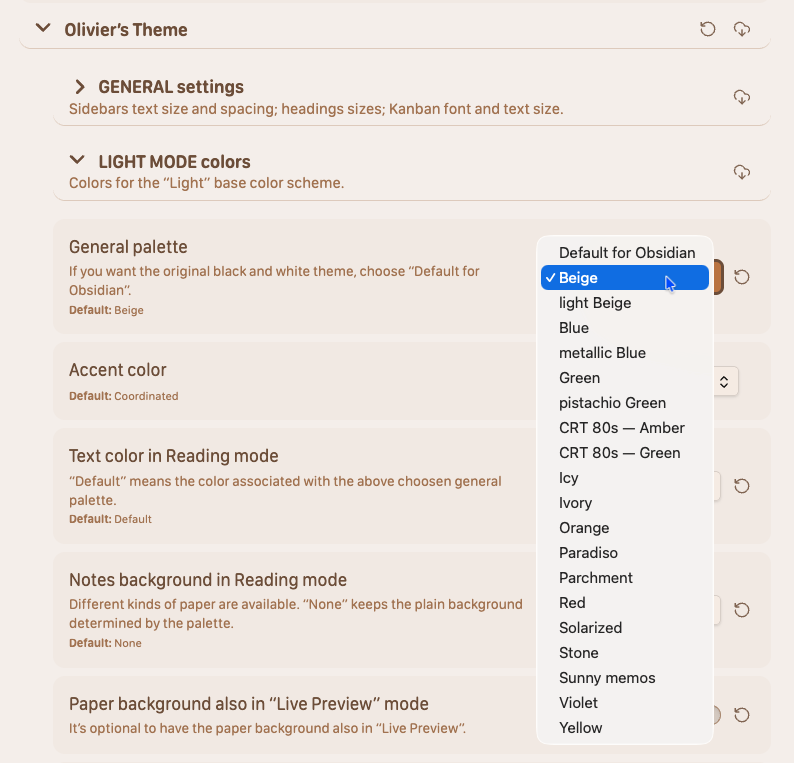
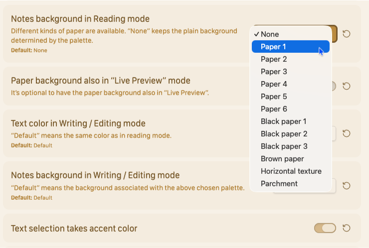

Olivier’s Theme 2.0 ⬩ User Guide¶
Olivier’s Theme is a refined interface theme for Obsidian that focuses on legibility, calm color palettes, and a clear separation between reading and writing. It is designed for people who spend a lot of time with long notes – journaling, research, psychotherapy notes, technical writing – and who want the interface to support, not distract, their thinking.
This User Guide explains how to get the most out of the theme, from the global interface settings to fine‑grained typography and per‑note cssclasses. It assumes you already know the basics of Obsidian and want to tune your workspace rather than learn Obsidian itself.
Before you start¶
To follow this guide and access all options, you will need:
- Obsidian 1.5 or later.
- Olivier’s Theme installed and active.
- The Style Settings plugin enabled, to access the theme’s configuration panels.
- (Optional but recommended) The Contextual Typography plugin, which lets the theme refine certain vertical spacings more precisely.
Most of the settings described here live under Settings → Appearance → Style Settings → Olivier’s Theme.
How this guide is organised¶
You do not have to read everything in order. The chapters are grouped by mental tasks:
- Start with General settings to set the overall interface size and spacing.
- Then pick your color palettes for Light and Dark modes.
- Decide how you want to separate Reading vs. Writing as activities.
- Tune Reading mode for a comfortable, book‑like experience.
- Tune Writing mode for the way you think and draft text.
- Finally, explore cssclasses and niceties for per‑note refinements and special layouts.
If you are in a hurry, you can simply follow the “Quick path” below.
Quick path ⬩ 5‑minute setup¶
- Set interface size and sidebar density
Open GENERAL settings and adjust: - “Base size for the interface texts (px)”, so sidebar text and UI labels are comfortable on your main screen.
- “Spacing for the files listing”, so the file explorer feels neither cramped nor overly airy.

- Choose your color palettes
In LIGHT MODE colors, pick a Light palette that fits your taste; a coordinated Dark palette is selected automatically.

-
Optionally override the Dark palette if you want a different mood at night.
-
Tune Reading mode for comfort In READING mode, adjust:
-
Body text size.
- Line height.
-
Line length (in em). Aim for a page that feels like a well‑set book, not a slide deck.
-
Tune Writing mode for ergonomics In WRITING / editing mode, pick:
-
The font you prefer while typing (can differ from Reading).
- Slightly smaller or larger body size.
-
Line length that fits your writing style.
-
Choose a paper background
You can read your notes written on paper. You have a choice, from subtle to parchment :

Once this is done, you already have a coherent, comfortable setup that you can refine later.cssclasses for special notes¶
For notes that need a special layout — with or without menu for the Bases, smaller or bigger reading text, tables with or without alternating row backgrounds, etc. — you have a handful of CSS classes that you can use by adding them in the note’s Properties, like this:
---
cssclasses:
- bases-clean
- readingMode-text-small
---
Table of contents¶
The rest of the documentation is organised into focused pages:
General settings¶
Global interface scaling, sidebar spacing, headings hierarchy, Kanban options, code wrapping, status bar, title bar breadcrumb, canvas background.
→ General
Colors in Light and Dark mode¶
How palettes work, how Light and Dark interact, accent colors, text vs muted text, and background logic.
→ Colors, light and dark modes
Reading mode¶
Body text size, line height, line length, tables style, image style and maximum height, Bases header hiding options.
→ Reading mode
Writing mode¶
Editor fonts, text sizes, line length and height tuned for drafting, so you see enough context around the cursor without sacrificing readability.
→ Writing mode
](colors-light-dark.md)
Reading vs Writing – mental modes¶
Why Reading and Writing are treated as different activities, and how to design your personal reading and drafting environments.
→ Reading vs. Writing
CSS classes and niceties¶
Visual catalogue of cssclasses: Bases headers, image sizing, reading‑text size, specialised niceties (step lists, table styles) and how to combine them in real notes. → CSS classes, Niceties and CSS classes
As the documentation evolves, this index will remain the entry point to the most up‑to‑date pages and screenshots.